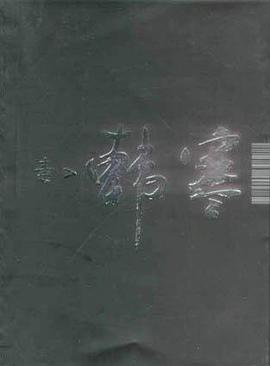

毒

7.6
★★★★☆
豆瓣评分 · 35,000 人评价
韩寒早年最具锋芒与争议的杂文评论结集。以辛辣刻薄的黑色幽默、一针见血的独立思辨，全面记录了其退学后直面全社会围剿、投身职业赛车以及对体制化应试教育的决绝声讨。
总体观点
《毒》是青年作家、赛车手韩寒于2002年出版的重要杂文思想集。在《三重门》引发全社会对‘韩寒现象’长达数年的大讨论之后，作者通过这部结集，对当时主流文化界、传统教育体制与媒体猎奇舆论进行了一次全面、猛烈且极富幽默感的正面反击。
全书以‘真实、不装、常识’为底层逻辑，打破了传统文人温良恭俭让的伪饰面具。韩寒以青年人天然的叛逆直觉，撕开应试教育以考分为唯一导向对青少天性的扼杀；同时记录了自己告别校园象牙塔后，进入职业拉力赛车圈跌打滚爬的残酷生存实录。全书语言极具个人特色，讽刺入骨、机锋四伏，不仅成为千禧一代青年冲破教条主义的思想参照，更奠定了韩寒作为新世纪华语公共领域最具号召力独立知识分子之一的言说范式。
核心观点
-
1. 对伪道德与专家话语霸权的无情拆解
权威并不代表真理，很多道貌岸然的道德训诫不过是既得利益者维护陈规的遮羞布。
在杂文中直言不讳地指出所谓教育专家在电视镜头前的痛心疾首，其本质不过是用迂腐的旧教条压榨年轻人的生命活力。 -
2. 赛车与写作的双轨生存：把吹过的牛变成现实
对抗世俗偏见最有力的武器不是言辞争辩，而是跨界进入一个冷酷的客观竞技场并凭借真本事登顶。
记录自己将巨额版税全部投入改装赛车与拉力赛道，顶着全社会‘玩物丧志必定失败’的看客心理在沙石路上跑出专业圈前列成绩。 -
3. 常识与真话的力量：拒绝被体制化语言规训
在充斥着大话、套话与空洞崇高的语境中，说出最简单的常识和个人真实感受就是最强大的反抗。
针对语文试卷中对文学作品的标准化答案分解，韩寒辛辣嘲讽‘作者写这扇窗是绿色的，可能只是因为油漆只剩绿色的了’。 -
4. 平民视角的独立判断：不盲从群体狂欢
保持对一切集体主义情绪与道德绑架的警惕，在喧嚣的时代浪潮中守卫微小个体的独立思考空间。
面对流行文化中的造神与毁神运动，冷静分析公众情绪的乌合之众属性，拒绝随波逐流参与任何口诛笔伐。 -
5. 成长的代价是自我界限的清晰确立
青年人走向成熟的标志不是被社会磨平棱角，而是在看清现实荒诞后依然坚持自己的生活节奏与价值底线。
在自述中坦然接受外界赋予的‘叛逆少年’标签，强调做好自己的事比迎合任何长辈的期待都更为重要和诚实。
全书结构
-
毒舌序曲：对外界喧嚣与质疑的回应
梳理退学后遭遇的全国性舆论风暴，以戏谑笔触回应各大报刊专家的指责，确立不妥协的言说姿态。
以‘既然你们觉得我有毒，那我就把毒性彻底释放给你们看’开篇，犀利回击外界对年轻一代的傲慢偏见。 -
教育批判：应试机器与语文课本的荒诞剧
深度解剖中小学标准化考试、应试作文与填鸭教学对创造力的扼杀，呼吁尊重个体天赋差异。
逐条拆解高考命题与作文评分标准的教条古板，列举大量自己亲身遭遇的荒唐阅卷与讲义细节。 -
赛道风云：速度、机械与泥泞中的成人礼
记录投身全国汽车拉力锦标赛的真实历程，描绘赛车维修间、领航员合作与生死时速中的野性成长。
写在贵州六盘水沙石赛道翻车跌入悬崖边缘的惊险刹那，以及与机械师通宵达旦抢修发动机的纯粹热血。 -
世态观察：市井百态与文化圈的名利场
将目光投向上海与北京的都市市井，讽刺文学出版圈的炒作风气、虚伪作秀与买椟还珠的世俗闹剧。
描绘文坛研讨会上老先生们故作高深的陈腐发言，与外头天桥上叫卖盗版光盘的小贩形成荒诞互文。 -
自我告白：少年意气与未完待续的漂流
收拢全书锋芒，流露出青年人独有的迷茫、孤独与对真正纯粹生活的不竭向往，展现真实的自我心境。
在深夜行车的高速公路上眺望远方城市的微弱灯火，坦陈对未来既无畏惧亦无宏大野心的平和心境。